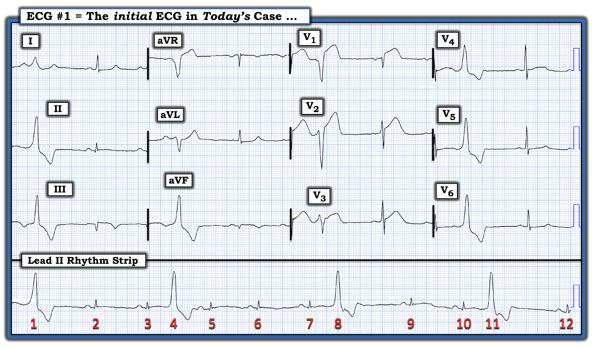
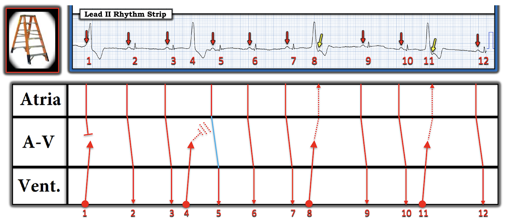
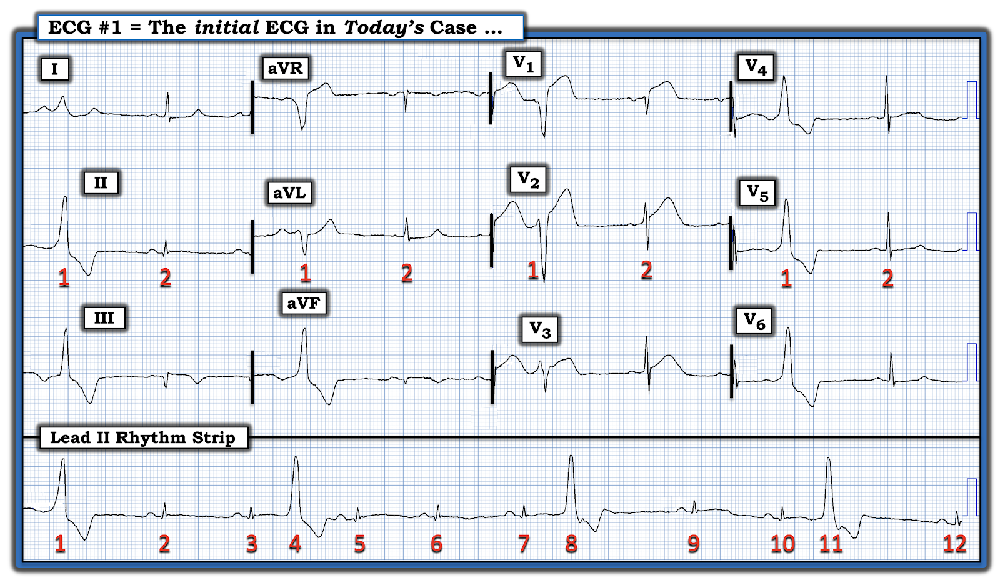

ECG Blog #359 — Có bao nhiêu nhát bóp trên điện tâm đồ 12 chuyển đạo?
Điện tâm đồ trong Hình 1 được ghi ở một bệnh nhân nam lớn tuổi, trước đó khỏe mạnh — ông than đau ngực và “choáng váng” trong khi đang ghi bản ghi này. Ông không bị tụt huyết áp. Cơn đau ngực của ông đã bắt đầu từ tối hôm trước.
- Với bệnh sử này — BẠN sẽ đọc điện tâm đồ trong Hình 1 như thế nào?
- Có tổng cộng 12 nhát bóp trên dải nhịp chuyển đạo II dài. Có bao nhiêu nhát bóp trên bản ghi 12 chuyển đạo nằm phía trên dải nhịp?


CÁCH TIẾP CẬN của tôi với điện tâm đồ trong Hình 1:
Như mọi lần khi gặp một bản ghi 12 chuyển đạo có kèm dải nhịp chuyển đạo dài — tôi tập trung trước tiên vào việc đọc nhịp (như thấy trên dải nhịp chuyển đạo dài nằm bên dưới điện tâm đồ 12 chuyển đạo trong Hình 1). Ghi nhớ cách tiếp cận Ps, Qs & 3R để đọc nhịp (theo ECG Blog #185):
- Nhịp chung trên dải nhịp chuyển đạo II dài trong Hình 1 không đều! Dù vậy — có một nhịp xoang nền, được xác định nhờ các sóng P xoang dương với khoảng PR cố định đứng trước các nhát #2,3; 5,6,7; 9,10 và 12. Phức bộ QRS của các nhát dẫn truyền từ xoang này hẹp.
- Mặt khác — phức bộ QRS của các nhát #1, 4, 8 và 11 thì rộng. Các nhát rộng này có hình dạng QRS rất khác so với các nhát dẫn truyền từ xoang — và, các nhát rộng này không có sóng P đi trước. Do đó — 4 nhát này là PVC (ngoại tâm thu thất — Premature Ventricular Contractions).
Câu trả lời "ngắn gọn":
- Nhịp trên điện tâm đồ #1 được mô tả đúng nhất là nhịp xoang kèm PVC thường xuyên.
CÂU HỎI:
- Vì sao có một khoảng ngưng ngắn sau 3 trong số các PVC (tức là sau các nhát #1,8,11) — nhưng không có sau nhát #4?
- Điểm nâng cao: Vì sao khoảng PR trước nhát #5 hơi dài hơn mọi khoảng PR khác trên bản ghi hôm nay?
TRẢ LỜI:
- Giống như phần lớn các PVC mà chúng ta gặp — các nhát #1,8,11 là những PVC có khoảng nghỉ bù. Nghĩa là — dẫn truyền ngược dòng (đi ngược lên) từ PVC kéo dài đủ lâu (và xuyên ngược đủ xa) — để ngăn sóng P xoang kế tiếp dẫn truyền xuôi xuống.
- Lý do không có khoảng ngưng sau nhát #4 — là vì đây là một PVC “xen kẽ” (interpolated) (tức là PVC này bị “kẹp” giữa 2 nhát dẫn truyền từ xoang mà không có khoảng nghỉ bù thường theo sau hầu hết các PVC).
Các khái niệm trên được giải thích rõ nhất bằng Giản đồ bậc thang (laddergram) mà tôi dựng cho dải nhịp chuyển đạo II dài của bản ghi hôm nay (Hình 2):
- LƯU Ý: Từ bản ghi hôm nay, tôi không thể chắc chắn các PVC dẫn truyền ngược dòng tới mức nào. Vì vậy tôi vẽ giản đồ bậc thang này dựa trên những gì tôi nghĩ đang xảy ra. Dù vậy — giản đồ bậc thang này minh họa tốt những gì thường xảy ra với các PVC xen kẽ.


ĐIỂM THEN CHỐT (PEARL) #1: Cần biết rằng khoảng PR của nhát dẫn truyền từ xoang theo sau một PVC xen kẽ đôi khi có thể bị kéo dài — đôi khi kéo dài hơn nhiều so với mức thấy ở nhát #5 trên bản ghi này. Sự kéo dài khoảng PR như vậy là kết quả của dẫn truyền ẩn (concealed conduction) (và không phải do blốc AV độ 2 kiểu Wenckebach).
- Lý do khoảng PR đứng trước nhát #5 trong Hình 2 hơi dài hơn mọi khoảng PR khác trên bản ghi hôm nay — là vì dẫn truyền ngược dòng từ PVC (nhát #4) xảy ra đúng vào thời điểm trong chu chuyển tim mà nó làm chậm nhưng không chặn hoàn toàn sự dẫn truyền của sóng P xoang kế tiếp khi sóng này đi qua nút AV và xuống các thất (thể hiện bằng độ nghiêng tăng nhẹ của đường XANH LAM chéo ở Tầng Nút AV).
- Tên gọi chuyên môn cho việc chúng ta có thể suy ra lý do của sự kéo dài nhẹ khoảng PR trước nhát #5 mà không thực sự “nhìn thấy” sự chậm dẫn truyền của sóng P xoang kế tiếp này trên điện tâm đồ bề mặt — được gọi là dẫn truyền “ẩn” (concealed conduction) (tức là tác động của dẫn truyền ngược dòng từ PVC này bị “che khuất” khỏi tầm nhìn của chúng ta).
- Lưu ý trong Hình 2 — không có kéo dài khoảng PR sau 3 PVC còn lại. Thay vào đó, ta thấy một khoảng nghỉ bù sau các PVC #1, 8 và 11.
- Sóng lệch âm nhẹ ở tận cùng phức bộ QRS của các PVC #8 và 11 nhiều khả năng là sóng P ngược dòng đã quay ngược về tới tận tâm nhĩ (các mũi tên VÀNG trên giản đồ bậc thang).
- Ngược lại — sự xuất hiện của một sóng P xoang đúng lúc ngay ở đầu phức bộ QRS của PVC #1 (mũi tên ĐỎ đầu tiên trong Hình 2) — ngăn dẫn truyền ngược dòng từ PVC này đi ngược về tới tận tâm nhĩ.
- XIN NHẤN MẠNH: Giản đồ bậc thang ở trên đưa ra câu trả lời "nâng cao" cho nhịp hôm nay. Câu trả lời "đơn giản" — là nhịp xoang kèm PVC, trong đó có một PVC xen kẽ. Câu trả lời đơn giản này đã quá đủ để đánh giá và xử trí lâm sàng tối ưu cho bệnh nhân hôm nay!
=================================
Sau khi đã đọc nhịp trên bản ghi hôm nay — Hãy quay lại với điện tâm đồ 12 chuyển đạo. Để thuận tiện cho việc đánh giá — tôi đã đưa lại Hình 1 ở bên dưới trong Hình 3.
- Như đã nêu khi trình bày ban đầu — bệnh nhân trong ca hôm nay là một nam giới lớn tuổi, trước đó khỏe mạnh, than đau ngực và "choáng váng" trong khi đang ghi điện tâm đồ trong Hình 3. Ông không bị tụt huyết áp. Cơn đau ngực của ông đã bắt đầu từ tối hôm trước.
- BẠN sẽ đọc điện tâm đồ 12 chuyển đạo của ông như thế nào?
DIỄN GIẢI của tôi về điện tâm đồ 12 chuyển đạo:
Điện tâm đồ hôm nay cho thấy nhịp xoang kèm PVC thường xuyên, đồng dạng (tức là hình dạng giống nhau). Việc đọc các thay đổi sóng ST-T trên bản ghi 12 chuyển đạo này trước hết dựa vào đánh giá các nhát dẫn truyền từ xoang ở từng chuyển đạo trong 12 chuyển đạo. Tôi sẽ để phần đọc các thay đổi sóng ST-T ở các PVC lại sau.
- Về các khoảng — khoảng PR bình thường — QRS của các nhát dẫn truyền từ xoang không rộng — và QTc bình thường.
- Dù điện thế QRS nhìn chung giảm — vẫn không đạt tiêu chuẩn điện thế thấp (tức là QRS không ≤5 mm ở cả 6 chuyển đạo chi).
- Không có lớn buồng tim.
Về Thay đổi Q-R-S-T ở các nhát dẫn truyền từ xoang:
- Sóng Q — có mặt ở cả ba chuyển đạo thành dưới (tức là ở các chuyển đạo II,III,aVF). Phức bộ QRS ở các chuyển đạo này cực nhỏ — với sóng Q đặc biệt lớn và rộng (khi xét theo biên độ QRS) ở chuyển đạo III và aVF. Có một sóng q nhỏ và hẹp ở chuyển đạo II.
- Tăng tiến sóng R — phù hợp đối với các nhát dẫn truyền từ xoang ở các chuyển đạo trước tim. Vùng chuyển tiếp (nơi chiều cao sóng R trở nên lớn hơn độ sâu sóng S) xảy ra bình thường ở đây, giữa chuyển đạo V2 và V3.
Về Thay đổi sóng ST-T ở các nhát dẫn truyền từ xoang:
- Ở 2 trong số các chuyển đạo thành dưới ( = chuyển đạo III và aVF) — có ST dạng vòm (coving) kèm ST chênh lên nhẹ và sóng T đảo ngược khá sâu (so với biên độ QRS ở các chuyển đạo này). Sóng ST-T ở chuyển đạo thành dưới thứ 3 ( = chuyển đạo II) thì dẹt (Lưu ý rằng dải nhịp chuyển đạo II dài cho chúng ta thêm nhiều "lần nhìn" vào sóng ST-T của chuyển đạo II — xác nhận rằng nó dẹt).
- Ở các chuyển đạo bên cao I và aVL — đoạn ST dẹt và chênh xuống nhẹ. Sóng ST-T ở chuyển đạo aVL cho hình ảnh đối nghịch soi gương với sóng ST-T ở chuyển đạo III (Xem ECG Blog #184 để biết thêm về mối quan hệ đối nghịch soi gương này).
- Đối với các nhát dẫn truyền từ xoang (QRS hẹp) ở các chuyển đạo trước tim — có ST chênh lên rõ rệt ở chuyển đạo V1, hoàn toàn không tương xứng với biên độ khiêm tốn của phức bộ QRS ở chuyển đạo này.
- Một mức ST chênh lên tại điểm J ít hơn (nhưng vẫn có ý nghĩa) được thấy ở chuyển đạo V2 và V3.
- Sóng ST-T dẹt và chênh xuống nhẹ ở các chuyển đạo trước tim bên V4,V5,V6.
Tổng Hợp Lại Tất Cả:
Ở bệnh nhân hôm nay, người đến khám vì đau ngực (bắt đầu từ tối hôm trước) và "choáng váng" — điện tâm đồ trong Hình 3 cho phép chẩn đoán STEMI cấp (nhồi máu cơ tim ST chênh lên — ST Elevation Myocardial Infarction).
- Các PVC thường xuyên (xuất hiện cứ mỗi nhát thứ ba hoặc thứ tư trên dải nhịp chuyển đạo II dài) — phù hợp với chẩn đoán một biến cố tim cấp gần đây này (và điều này có thể giải thích tình trạng "choáng váng" của bệnh nhân).
- Hai Câu hỏi được đặt ra là: i) Khi nào trong ngày vừa qua nhồi máu của bệnh nhân này đã xảy ra? — và, ii) Đâu là động mạch "thủ phạm" có khả năng nhất?
- Ban đầu tôi nghĩ ST chênh lên ở các chuyển đạo trước V1,V2,V3 hướng tới tắc cấp động mạch vành LAD (động mạch liên thất trước — Left Anterior Descending) là mạch "thủ phạm".
- Sau khi cân nhắc thêm — tôi nghi động mạch "thủ phạm" là RCA (động mạch vành phải — Right Coronary Artery) đoạn gần. Sóng Q lớn ở chuyển đạo III và aVF, cùng với một mức nhỏ (tồn dư) ST chênh lên dạng vòm kèm sóng T đảo ngược mức độ vừa — gợi ý sóng T tái tưới máu của một nhồi máu cơ tim thành dưới cấp có lẽ đã bắt đầu từ tối hôm trước khi cơn đau ngực khởi phát.
- Hình ảnh sóng ST-T đối nghịch soi gương thấy ở các chuyển đạo bên cao I và aVL là một thay đổi soi gương (reciprocal). Điều này phù hợp với tái tưới máu tự phát của động mạch "thủ phạm" — có lẽ đã xảy ra trong những giờ sau khi RCA bị tắc.
- ĐIỂM THEN CHỐT (PEARL) #2: Lưu ý rằng mức độ tương đối của ST chênh lên ở các chuyển đạo trước là lớn nhất ở chuyển đạo V1 — rồi giảm dần khi chuyển sang chuyển đạo V2 — và sau đó là chuyển đạo V3. Nói chung, ta sẽ chờ đợi diễn tiến ngược lại nếu mạch "thủ phạm" là LAD bị tắc. Ta cũng sẽ chờ đợi rằng đến thời điểm này (khi triệu chứng đã khởi phát từ tối hôm trước) — ST chênh lên do tắc LAD cấp có lẽ đã lan ra quá chuyển đạo V3.
- Ngược lại — nhồi máu thất phải cấp được biết là đôi khi gây ST chênh lên rõ rệt, lớn nhất ở chuyển đạo V1 trên bản ghi 12 chuyển đạo chuẩn. (Ghi các chuyển đạo bên phải ở bệnh nhân này đã có thể giúp chẩn đoán — vì nhồi máu thất phải (RV MI) cấp với mức ST chênh lên như thế này ở chuyển đạo V1 chắc chắn sẽ gây ST chênh lên rõ rệt ở các chuyển đạo bên phải khác — Xem ECG Blog #190 để biết thêm về RV MI cấp).
- NẾU quả thật ST chênh lên ở các chuyển đạo trước trong Hình 3 là hậu quả của RV MI cấp — điều này sẽ khu trú động mạch "thủ phạm" ở RCA đoạn gần — vì máu nuôi thất phải hầu như luôn đến từ đoạn đầu của RCA.
ĐIỂM THEN CHỐT (PEARL) #3 (Điểm nâng cao): Phần lớn các bản ghi OMI cấp (nhồi máu cơ tim do tắc — Occlusion-based MI) được nhận ra qua điện tâm đồ sẽ được chẩn đoán dựa trên thay đổi hình dạng sóng ST-T ở các nhát dẫn truyền từ xoang. Đánh giá hình dạng sóng ST-T ở các PVC thường không phải là chỉ điểm đáng tin cậy của một biến cố cấp.
- Dù vậy — Đôi khi, hình dạng của sóng ST-T chênh lên hoặc chênh xuống ở một hoặc nhiều PVC có thể giúp chẩn đoán nhồi máu cấp.
- Đây chính là trường hợp trong Hình 3. Hình dạng QRST của các PVC ở các chuyển đạo chi và ở chuyển đạo V4,V5,V6 — phù hợp với LBBB. Dù thấy điểm J chênh xuống đáng kể ở các PVC tại nhiều chuyển đạo trong số này — bản thân dấu hiệu này không đủ đặc hiệu để chẩn đoán một biến cố cấp.
- Ngược lại — mức độ và hình dạng của ST chênh lên ở PVC mà ta thấy trên các chuyển đạo ghi đồng thời V1,V2,V3 trong Hình 3 — rõ ràng không tương xứng với hình dạng mà ta chờ đợi ở đoạn ST của PVC này. Điều này đặc biệt đúng với ST chênh lên dạng vòm ("kiểu bia mộ") của PVC ở chuyển đạo V1 — mà ngay cả khi không có ST chênh lên ở các nhát dẫn truyền từ xoang, cũng đã gợi ý mạnh nhồi máu cấp.
- LƯU Ý: Để xem ví dụ về một ca mà việc đánh giá các nhát bình thường (dẫn truyền từ xoang) không đủ khẳng định OMI cấp — đến mức chẩn đoán nhồi máu cấp chỉ được đưa ra nhờ nhận ra hình dạng sóng ST-T bất thường của một số PVC — Xem Bình luận của tôi ở cuối bài đăng ngày 8 tháng 10 năm 2018 trên Dr. Smith's ECG Blog.
========================================
THỬ THÁCH CUỐI CÙNG của CA hôm nay:
- Có tổng cộng 12 nhát bóp trên dải nhịp chuyển đạo II dài của bản ghi hôm nay. Có bao nhiêu nhát bóp trên bản ghi 12 chuyển đạo nằm phía trên dải nhịp chuyển đạo dài?
- GỢI Ý: Vì sao tôi lặp lại các số 1 và 2 cho mỗi nhóm 3 chuyển đạo gồm các nhát ghi đồng thời trong Hình 4?


TRẢ LỜI cho Thử thách cuối cùng:
Điều quan trọng cần nhận ra là dải nhịp chuyển đạo II dài trên bản ghi hôm nay không được ghi đồng thời với từng bộ 3 chuyển đạo. Dễ thấy điều này nhất — nếu bạn nhìn thẳng lên phía trên các nhát #5 đến 12 trên dải nhịp chuyển đạo II dài.
- Có rất nhiều kiểu hệ thống ghi khác nhau được dùng trong vô số không đếm xuể các hệ máy điện tâm đồ khác nhau. Hệ thống ghi dùng cho bản ghi hôm nay lặp lại các nhát #1 và 2 ở mỗi bộ 3 chuyển đạo — và — ngoài ra, còn cung cấp một dải nhịp chuyển đạo II dài độc lập. (LƯU Ý: Chúng ta đã gặp một kiểu hệ thống ghi tương tự ở ca được trình bày trong ECG Blog #357).
- BÌNH LUẬN CỦA TÁC GIẢ: Đây không phải là hệ thống ghi điện tâm đồ mà tôi ưa thích — vì tôi thấy nó gây nhầm lẫn. Ưu điểm của hệ thống này là chúng ta có được thấy 2 nhát đầu tiên trên dải nhịp chuyển đạo dài trông như thế nào ở cả 12 chuyển đạo. Nhược điểm rõ rệt (theo ý kiến của tôi) — là chúng ta không biết các nhát còn lại trông thế nào ở các chuyển đạo khác ngoài chuyển đạo II dài.
- Một lý do khác khiến hệ thống ghi này gây nhầm lẫn ở bản ghi hôm nay — là khi nhìn điện tâm đồ 12 chuyển đạo trong Hình 4, trông như thể nhịp là nhịp đôi thất. Trái lại — chúng ta chỉ thấy 1 PVC trên toàn bộ bản ghi 12 chuyển đạo. Đó là nhát #1 trên dải nhịp chuyển đạo II dài — mà ta thấy ở các chuyển đạo ghi đồng thời I,II,III. Sau đó ta lại thấy nhát #1 ở các chuyển đạo ghi đồng thời aVR,aVR,aVF — rồi lại ở V1,V2,V3 — và lần cuối ở V4,V5,V6.
- Hãy tưởng tượng bản ghi này có thể gây nhầm lẫn đến mức nào nếu thay vì 4 PVC mà ta thấy trên dải nhịp chuyển đạo II dài (tức là các nhát #1,4,8 và 11) — nhát #1 lại là PVC duy nhất xảy ra. Điện tâm đồ 12 chuyển đạo vẫn sẽ trông y như trong Hình 4 — vì với kiểu hệ thống ghi này, vài nhát đầu tiên được lặp lại ở mỗi nhóm trong 12 chuyển đạo.
===================================
- Lời cảm ơn: Xin cảm ơn Arron Pearce (từ Manchester, Vương quốc Anh) đã cung cấp ca bệnh và bản ghi này.
==================================
Các bài ECG Blog liên quan đến ca hôm nay:
- ECG Blog #205 — Ôn lại Cách tiếp cận hệ thống của tôi để đọc điện tâm đồ 12 chuyển đạo.
- ECG Blog #185 — Ôn lại cách tiếp cận Ps, Qs, 3R để đọc rối loạn nhịp.
- ECG Blog #68 — Ôn lại khái niệm PVC xen kẽ.
- ECG Blog #193 — minh họa cách dùng nghiệm pháp soi gương (Mirror Test) để giúp nhận ra nhồi máu cơ tim thành sau cấp. Bài này ôn lại những điều cơ bản để dự đoán động mạch "thủ phạm" (cũng như ôn lại lý do vì sao thuật ngữ "STEMI" — nên được thay bằng "OMI" = nhồi máu cơ tim do tắc (Occlusion-based MI)).
- ECG Blog #184 — và ECG Blog #167 — ôn lại mối quan hệ đối nghịch soi gương "kỳ diệu" giữa chuyển đạo III và chuyển đạo aVL, giúp khẳng định OMI cấp.
- ECG Blog #258 — Cách "định tuổi" một nhồi máu dựa trên điện tâm đồ ban đầu.
- ECG Blog #294 — Ôn lại cách nhận biết LIỆU động mạch "thủ phạm" đã tái tưới máu hay chưa.
- ECG Blog #230 — Ôn lại cách so sánh các điện tâm đồ liên tiếp.
- ECG Blog #115 — Cho thấy thay đổi ST-T có thể xảy ra mạnh mẽ đến mức nào chỉ trong vòng 8 phút.
- ECG Blog #268 — Cho thấy một ví dụ về sóng T tái tưới máu.
- ECG Blog #337 — Một ca "NSTEMI" thực ra là một OMI đang diễn ra với thời gian không rõ (biểu hiện bằng sóng T tái tưới máu ở các chuyển đạo thành dưới).
- ECG Blog #190 — Ôn lại khái niệm RV MI cấp.